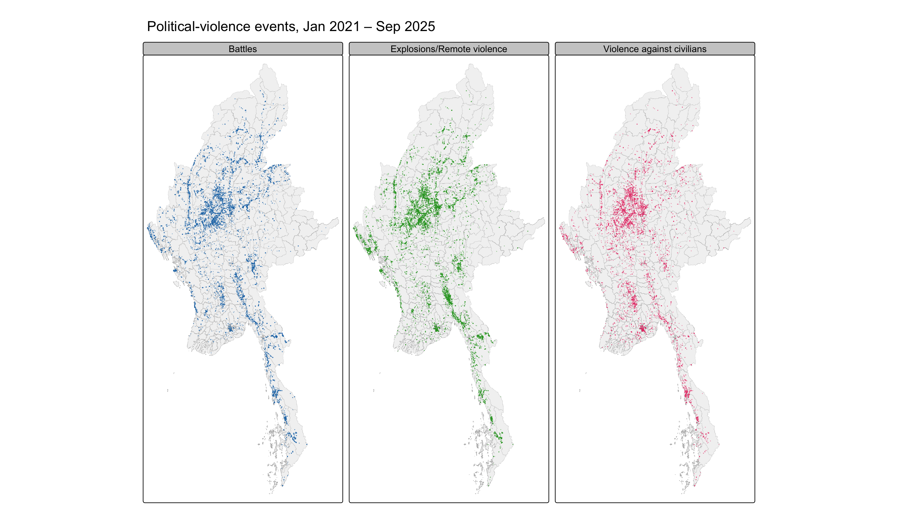
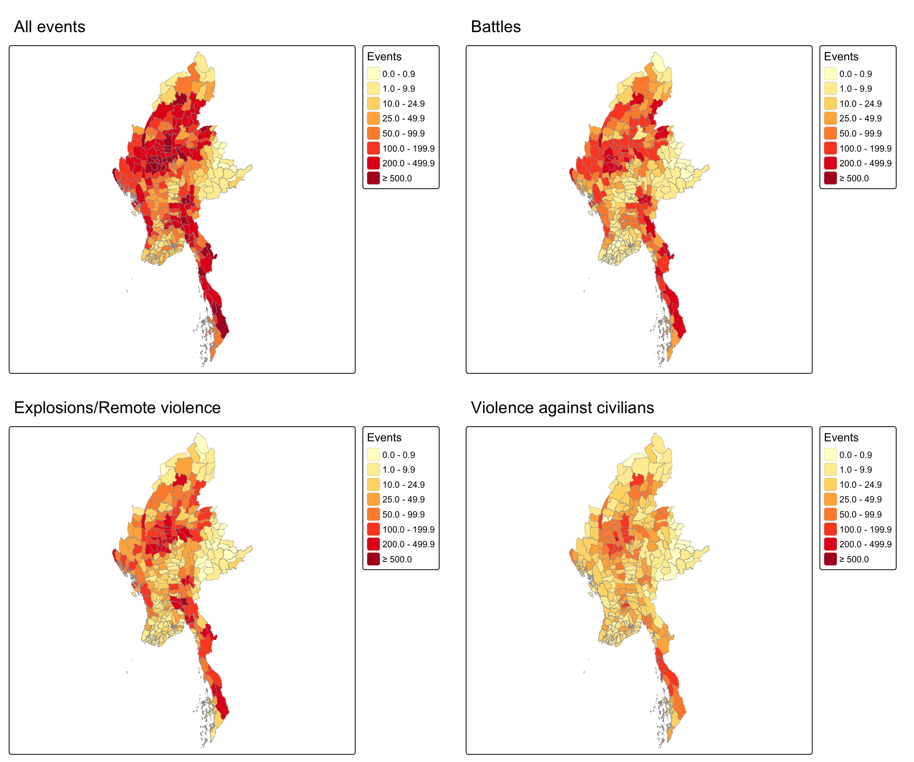
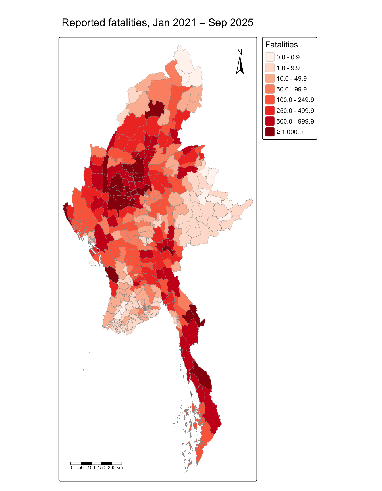
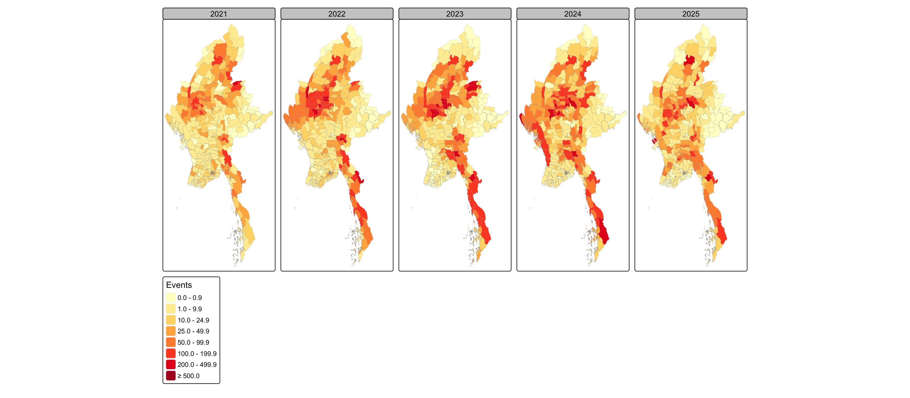
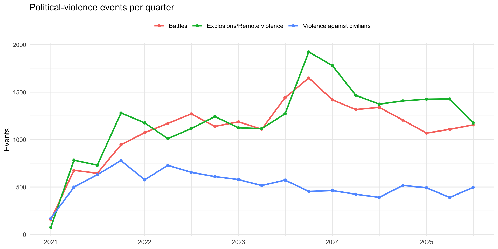
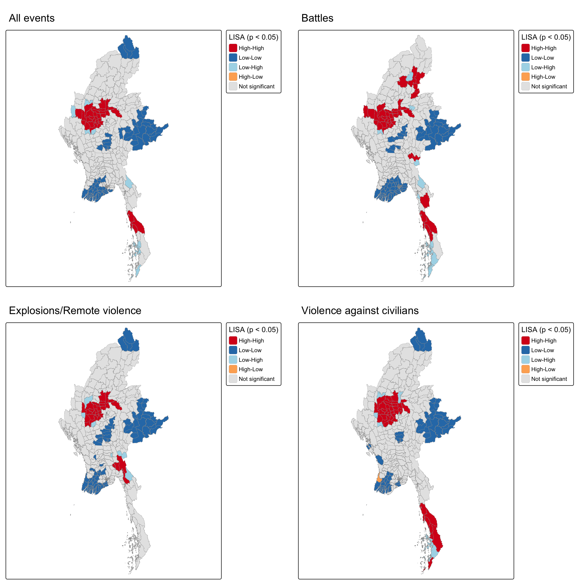
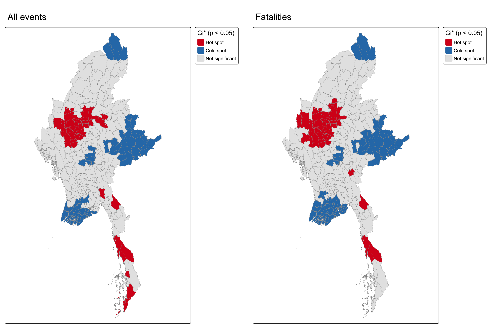
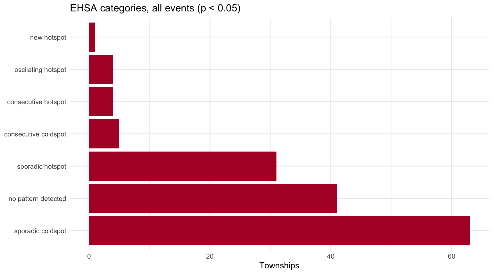
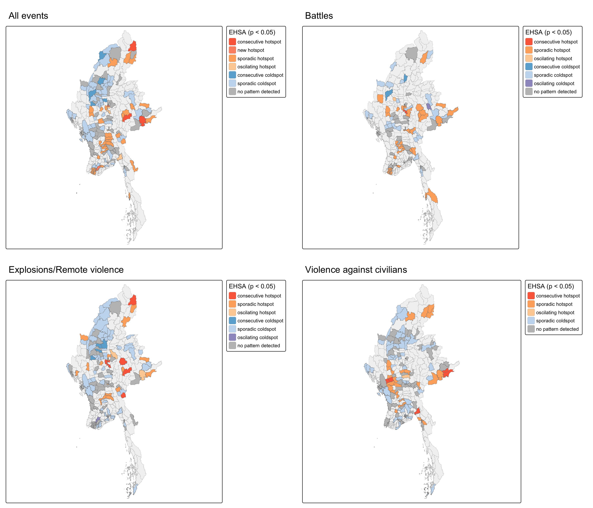
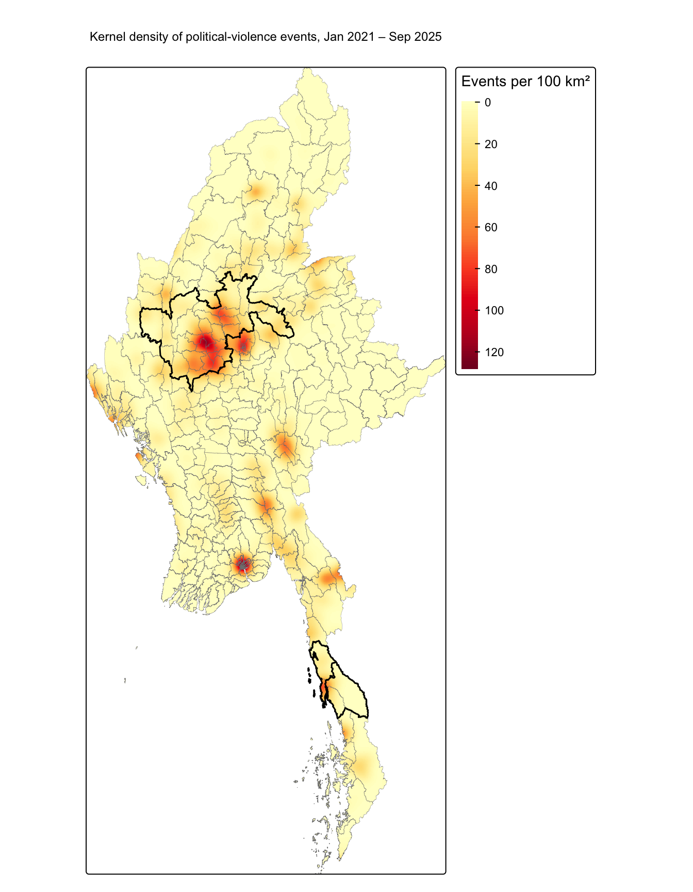

pacman::p_load(sf, tidyverse, lubridate, sfdep, Kendall, tmap, knitr, spatstat, terra)Take-home Exercise 2: Geospatial Analytics for Peace
Executive Summary
View presentation slidesSetting the Scene
Myanmar has been in armed conflict since it gained independence from Britain in 1948. The fighting has mostly been between ethnic armed organisations seeking self-rule and the national military, the Tatmadaw. Repeated ceasefires and the creation of self-administered zones in 2008 have not ended these demands, making it the world’s longest-running civil war. The February 2021 military coup, which ousted the elected National League for Democracy government, sharply escalated the conflict. The junta’s violent crackdown pushed many civilians to flee or take up arms. The resulting civil war has killed thousands, displaced more than three million people, and fragmented the country into areas held by rival groups. Large parts of Myanmar are now largely outside military control.
Objectives
In this exercise, we will explore Local Measures of Spatial Association methods and Emerging Hot Spot Analysis method to identifying, assessing, and geovisualizing the spatial distribution, patterns and trends of armed conflict in the Myanmar at township level from 1st January 2021 to 30th September 2025.
The specific objectives of this take-home exercise are:
To pinpoint exact geographic hotspots, cold spots, and spatial outliers where violence clusters or behaves unusually compared to surrounding townships.
To reveal where, how fast, and in what pattern political violence is evolving over space and time.
In a modest way, we hope that the results can assist in peace-building initiatives and preventing further armed conflicts in the country.
The Data
Aspatial Data
Armed Conflict Location & Event Data Project (ACLED) data of Myanmar was used. The study time period is from 1st January 2021 to 30th September 2025.
Geospatial Data
Myanmar Township Boundaries MIMU v9.4 was used in this study. The data was downloaded from:
Study Design
Unit of analysis: 330 townships from MIMU v9.4.
Study period: 1 January 2021 to 30 September 2025, aggregated into 19 quarters for the space-time cube.
Conflict variables: all political-violence events, battles, explosions/remote violence, violence against civilians, and fatalities.
Methods: Global and Local Moran’s I and Gi* for spatial patterns, and Emerging Hot Spot Analysis with the Mann-Kendall test for space-time trends.
The Task
Geospatial Data Science
Packages
| Package | Purpose |
|---|---|
| sf | Import and process geospatial data |
| tidyverse | Data wrangling and charts |
| lubridate | Handle dates |
| sfdep | Space-time cube, LMSA and EHSA |
| Kendall | Mann-Kendall trend test |
| tmap | Thematic maps |
| knitr | Tables |
| spatstat | Kernel density estimation |
| terra | Convert the density surface to a raster for mapping |
Importing the township boundaries
mmr_ts <- st_read(dsn = "data/geospatial",
layer = "mmr_polbnda_adm3_250k_mimu_1") %>%
select(ST, DT, TS, TS_PCODE) %>%
st_transform(crs = 32647)Reading layer `mmr_polbnda_adm3_250k_mimu_1' from data source
`/Users/muratkaya/Desktop/credor/ISSS626-GAA/Take-home_Ex/data/geospatial'
using driver `ESRI Shapefile'
Simple feature collection with 330 features and 8 fields
Geometry type: MULTIPOLYGON
Dimension: XY
Bounding box: xmin: 92.1721 ymin: 9.605884 xmax: 101.17 ymax: 28.54554
Geodetic CRS: WGS 84The layer has one polygon per township. The data are transformed from WGS 84 (EPSG:4326) to UTM zone 47N (EPSG:32647) so that distances and areas are measured in metres.
c(features = nrow(mmr_ts),
unique_townships = n_distinct(mmr_ts$TS_PCODE),
invalid = sum(!st_is_valid(mmr_ts))) features unique_townships invalid
330 330 0 Importing the ACLED data
acled_raw <- read_csv("data/aspatial/ACLED_Data_Myanmar_Jan2021-Sep2025.csv")
glimpse(acled_raw)Rows: 87,109
Columns: 31
$ event_id_cnty <chr> "MMR10920", "MMR10906", "MMR10932", "MMR10933", "MM…
$ event_date <date> 2021-01-01, 2021-01-01, 2021-01-01, 2021-01-01, 20…
$ year <dbl> 2021, 2021, 2021, 2021, 2021, 2021, 2021, 2021, 202…
$ time_precision <dbl> 1, 1, 1, 1, 1, 1, 1, 1, 1, 1, 1, 1, 1, 1, 1, 1, 1, …
$ disorder_type <chr> "Political violence", "Political violence", "Politi…
$ event_type <chr> "Violence against civilians", "Battles", "Battles",…
$ sub_event_type <chr> "Attack", "Armed clash", "Armed clash", "Armed clas…
$ actor1 <chr> "Unidentified Armed Group (Myanmar)", "PSLF/TNLA: P…
$ assoc_actor_1 <chr> NA, NA, NA, NA, NA, NA, NA, NA, NA, NA, NA, NA, NA,…
$ inter1 <chr> "Political militia", "Rebel group", "Rebel group", …
$ actor2 <chr> "Civilians (Myanmar)", "RCSS/SSA-S: Restoration Cou…
$ assoc_actor_2 <chr> NA, NA, NA, NA, NA, NA, NA, NA, NA, NA, NA, NA, "Go…
$ inter2 <chr> "Civilians", "Rebel group", "Rebel group", "Rebel g…
$ interaction <chr> "Political militia-Civilians", "Rebel group-Rebel g…
$ civilian_targeting <chr> "Civilian targeting", NA, NA, NA, NA, NA, NA, NA, "…
$ iso <dbl> 104, 104, 104, 104, 104, 104, 104, 104, 104, 104, 1…
$ region <chr> "Southeast Asia", "Southeast Asia", "Southeast Asia…
$ country <chr> "Myanmar", "Myanmar", "Myanmar", "Myanmar", "Myanma…
$ admin1 <chr> "Shan-North", "Shan-North", "Shan-North", "Shan-Nor…
$ admin2 <chr> "Muse", "Kyaukme", "Kyaukme", "Kyaukme", "Sittwe", …
$ admin3 <chr> "Muse", "Kyaukme", "Hsipaw", "Namtu", "Sittwe", "Na…
$ location <chr> "Muse", "Kyaukme", "Hsipaw", "Namtu", "Sittwe", "Pa…
$ latitude <dbl> 23.9933, 22.5392, 22.6166, 23.0766, 20.1462, 22.960…
$ longitude <dbl> 97.9103, 97.0343, 97.3003, 97.4033, 92.8984, 97.511…
$ geo_precision <dbl> 2, 2, 2, 2, 2, 1, 2, 1, 1, 2, 2, 2, 2, 1, 2, 2, 2, …
$ source <chr> "Mizzima; Shan Herald Agency for News; Shwe Phee My…
$ source_scale <chr> "Subnational-National", "Subnational", "Other", "Ot…
$ notes <chr> "On 1 January 2021, in Hko Wein village or Muse tow…
$ fatalities <dbl> 1, 0, 0, 0, 0, 0, 0, 0, 0, 0, 3, 0, 1, 0, 0, 0, 0, …
$ tags <chr> "Terrorist activity", "Insurgency", "Insurgency", "…
$ timestamp <dbl> 1754410549, 1753971383, 1753971383, 1753971383, 178…Data Wrangling
Filtering the conflict events. Three filters are applied:
Study period: 1 January 2021 to 30 September 2025.
Event types: only Battles, Explosions/Remote violence and Violence against civilians, ACLED’s definition of political violence. Protests, riots and strategic developments are excluded because they are not armed conflict.
Location precision: events with
geo_precision = 3are only known at state/region level, so they cannot be placed in the correct township and are removed.
keep_events <- c("Battles",
"Explosions/Remote violence",
"Violence against civilians")
acled <- acled_raw %>%
mutate(event_date = as.Date(parse_date_time(event_date, c("ymd", "dmy")))) %>%
filter(event_date >= as.Date("2021-01-01"),
event_date <= as.Date("2025-09-30"),
event_type %in% keep_events,
geo_precision < 3) %>%
distinct(event_id_cnty, .keep_all = TRUE) %>%
select(event_id_cnty, event_date, event_type, sub_event_type,
fatalities, latitude, longitude)
c(raw = nrow(acled_raw), kept = nrow(acled)) raw kept
87109 53910 acled %>% count(event_type) %>% kable()| event_type | n |
|---|---|
| Battles | 21069 |
| Explosions/Remote violence | 22899 |
| Violence against civilians | 9942 |
# Converting to sf
acled_sf <- acled %>%
st_as_sf(coords = c("longitude", "latitude"), crs = 4326) %>%
st_transform(crs = 32647)Assigning events to townships
ACLED and MIMU share no common key and spell township names differently, so each event is assigned to the township polygon it falls in using a spatial join.
acled_ts <- st_join(acled_sf, mmr_ts %>% select(TS_PCODE),
join = st_intersects) %>%
distinct(event_id_cnty, .keep_all = TRUE)
sum(is.na(acled_ts$TS_PCODE))[1] 11A few events lie just outside the boundaries (along the coast or on rivers). They are given to the nearest township.
outside <- is.na(acled_ts$TS_PCODE)
nearest <- st_nearest_feature(acled_ts[outside, ], mmr_ts)
acled_ts$TS_PCODE[outside] <- mmr_ts$TS_PCODE[nearest]
acled_ts <- acled_ts %>%
mutate(year = year(event_date),
qtr = floor_date(event_date, unit = "quarter"))Township-level conflict variables
For each township the following are counted over the study period:
| Variable | Meaning |
|---|---|
events |
All political-violence events |
battles |
Battles |
remote |
Explosions/remote violence (air strikes, shelling, drones) |
vac |
Violence against civilians |
fatalities |
Reported fatalities |
Townships with no events get 0.
count_vars <- function(df) {
df %>%
summarise(events = n(),
battles = sum(event_type == "Battles"),
remote = sum(event_type == "Explosions/Remote violence"),
vac = sum(event_type == "Violence against civilians"),
fatalities = sum(fatalities, na.rm = TRUE),
.groups = "drop")
}
ts_counts <- acled_ts %>%
st_drop_geometry() %>%
group_by(TS_PCODE) %>%
count_vars()
mmr_conflict <- mmr_ts %>%
left_join(ts_counts, by = "TS_PCODE") %>%
mutate(across(events:fatalities, ~ replace_na(.x, 0)))
summary(st_drop_geometry(mmr_conflict)[, c("events", "battles", "remote", "vac", "fatalities")]) events battles remote vac
Min. : 0.0 Min. : 0.00 Min. : 0.00 Min. : 0.00
1st Qu.: 24.0 1st Qu.: 4.00 1st Qu.: 9.00 1st Qu.: 7.00
Median : 79.0 Median : 20.00 Median : 29.50 Median : 18.00
Mean : 163.4 Mean : 63.85 Mean : 69.39 Mean : 30.13
3rd Qu.: 214.0 3rd Qu.: 93.50 3rd Qu.: 92.75 3rd Qu.: 40.00
Max. :1039.0 Max. :447.00 Max. :601.00 Max. :213.00
fatalities
Min. : 0.0
1st Qu.: 14.0
Median : 81.0
Mean : 269.7
3rd Qu.: 377.0
Max. :1877.0 The space-time cube has one row for every township in every quarter (330 townships × 19 quarters). Quarters are used because monthly counts are very sparse in many townships, while 19 time steps are still enough for the Mann-Kendall test in EHSA. Township-quarters with no events are filled with 0 using complete().
all_qtrs <- seq(as.Date("2021-01-01"), as.Date("2025-07-01"), by = "quarter")
conflict_panel <- acled_ts %>%
st_drop_geometry() %>%
group_by(TS_PCODE, qtr) %>%
count_vars() %>%
complete(TS_PCODE = mmr_ts$TS_PCODE, qtr = all_qtrs,
fill = list(events = 0L, battles = 0L, remote = 0L,
vac = 0L, fatalities = 0)) %>%
arrange(qtr, TS_PCODE)
nrow(conflict_panel) # should equal 330 x 19 = 6,270[1] 6270conflict_st <- spacetime(conflict_panel, mmr_ts,
.loc_col = "TS_PCODE",
.time_col = "qtr")
is_spacetime_cube(conflict_st)[1] TRUEdir.create("data/rds", showWarnings = FALSE)
write_rds(mmr_conflict, "data/rds/mmr_conflict.rds")
write_rds(conflict_st, "data/rds/conflict_st.rds")Geovisualisation
brks <- c(0, 1, 10, 25, 50, 100, 200, 500, Inf)
tmap_mode("plot")Where conflict events occurred
tm_shape(mmr_ts) +
tm_polygons(fill = "grey95", col = "grey70", lwd = 0.2) +
tm_shape(acled_ts) +
tm_dots(fill = "event_type", size = 0.05, fill_alpha = 0.4,
fill.legend = tm_legend(show = FALSE)) +
tm_facets(by = "event_type", ncol = 3) +
tm_title("Political-violence events, Jan 2021 – Sep 2025")
Observations
Political violence is concentrated, not spread evenly across Myanmar. All three event types cluster most heavily in the central Dry Zone (Sagaing, Magway and Mandalay). Outside this core, events form north–south bands through Bago, Kayin and Mon, with smaller clusters in Rakhine, Kachin and northern Shan.
Battles are the most widespread. Explosions/remote violence follow a similar pattern, suggesting air strikes and shelling accompany ground fighting. Violence against civilians is concentrated mainly in the Dry Zone and the Bago–Kayin area.
Conflict events by township
map_count <- function(var, title) {
tm_shape(mmr_conflict) +
tm_polygons(fill = var,
fill.scale = tm_scale_intervals(breaks = brks,
values = "brewer.yl_or_rd"),
fill.legend = tm_legend(title = "Events"),
col = "grey60", lwd = 0.2) +
tm_title(title)
}
tmap_arrange(map_count("events", "All events"),
map_count("battles", "Battles"),
map_count("remote", "Explosions/Remote violence"),
map_count("vac", "Violence against civilians"),
ncol = 2)
Observations
At township level, the central Dry Zone and the south-east belt stand out. Many townships there record more than 200 events, and several more than 500.
Battles and explosions/remote violence show almost the same pattern, with the highest counts in the Dry Zone, the south-east and Rakhine. This suggests air strikes and shelling occur where ground fighting is heaviest. Violence against civilians is lower in most townships (mostly under 100 events), but is again highest in the Dry Zone and the south-east.
High-count townships sit next to each other rather than being scattered, which suggests spatial clustering.
Fatalities by township
tm_shape(mmr_conflict) +
tm_polygons(fill = "fatalities",
fill.scale = tm_scale_intervals(breaks = c(0, 1, 10, 50, 100, 250, 500, 1000, Inf),
values = "brewer.reds"),
fill.legend = tm_legend(title = "Fatalities"),
col = "grey60", lwd = 0.2) +
tm_title("Reported fatalities, Jan 2021 – Sep 2025") +
tm_compass(position = c("right", "top")) +
tm_scalebar(position = c("left", "bottom"))
Observations
Fatalities follow a similar pattern to event counts. The highest tolls, over 1,000 deaths per township, are in the central Dry Zone and the south-east belt. Some areas with fewer events still suffered heavy losses, a sign of more intense or deadlier fighting there.
ACLED fatality figures are conservative estimates and may be under-reported in remote or inaccessible areas.
Conflict events by year
ts_year <- acled_ts %>%
st_drop_geometry() %>%
count(TS_PCODE, year, name = "events") %>%
complete(TS_PCODE = mmr_ts$TS_PCODE, year = 2021:2025,
fill = list(events = 0L))
mmr_year <- mmr_ts %>%
left_join(ts_year, by = "TS_PCODE", relationship = "one-to-many")
tm_shape(mmr_year) +
tm_polygons(fill = "events",
fill.scale = tm_scale_intervals(breaks = brks,
values = "brewer.yl_or_rd"),
fill.legend = tm_legend(title = "Events"),
col = "grey60", lwd = 0.1) +
tm_facets(by = "year", ncol = 5)
Observations
Political violence grew and spread over the study period. In 2021, the first year after the coup, counts were moderate and scattered.
By 2022, violence had intensified sharply in the Dry Zone and along the south-east belt. In 2023 these areas stayed active.
2024 was the most widespread year. Rakhine became a major hotspot and high counts covered the Dry Zone, Mandalay and the whole south-east. In 2025 many areas appear lighter but hotspots remain. Part of this decline reflects the shorter period, as 2025 covers only January to September.
Conflict events over time
acled_ts %>%
st_drop_geometry() %>%
count(qtr, event_type) %>%
ggplot(aes(qtr, n, colour = event_type)) +
geom_line(linewidth = 1) +
geom_point() +
labs(title = "Political-violence events per quarter",
x = NULL, y = "Events", colour = NULL) +
theme_minimal() +
theme(legend.position = "top")
Observations
Political violence rose sharply after the coup. Each event type had fewer than 200 events in the first quarter of 2021, but battles and explosions passed 1,000 events per quarter by 2022 and stayed around that level until mid-2023.
All events peaked in the last quarter of 2023, when explosions/remote violence reached about 1,900 events and battles about 1,650. Both declined in 2024.
Since early 2024, explosions/remote violence have stayed consistently above battles. This suggests a growing reliance on air strikes, shelling and drones rather than ground fighting.
Violence against civilians peaked in late 2021 at almost 800 events, then declined gradually to about 400–500 events per quarter. It remains the least frequent type throughout.
Local Measures of Spatial Association (LMSA) Analysis
LMSA tests whether conflict in a township is similar to conflict in its neighbouring townships and where those clusters are. Two methods are used:
- Local Moran’s I (LISA) finds clusters (High-High, Low-Low) and outliers (High-Low, Low-High).
- Getis-Ord Gi* finds hot spots and cold spots.
Only results that are statistically significant (p-value < 0.05) are shown on the maps.
Spatial weights
Neighbours are defined with k-nearest neighbours (k = 8), measured between points placed inside each township st_point_on_surface(). This is used instead of contiguity because:
- some townships are islands and would have no contiguous neighbours
- townships vary greatly in size and k-nearest neighbours gives every township the same number of neighbours
The weights are row-standardised (style = “W”), so each neighbour gets an equal share of the influence.
mmr_wm <- mmr_conflict %>%
mutate(nb = st_knn(st_point_on_surface(geometry), k = 8),
wt = st_weights(nb, style = "W"),
.before = 1)Global Moran’s I
Before looking for local clusters, Global Moran’s I tests whether conflict is clustered across Myanmar as a whole. A permutation test with 999 simulations is used because conflict counts are highly skewed and do not follow a normal distribution.
vars <- c(events = "All events",
battles = "Battles",
remote = "Explosions/Remote violence",
vac = "Violence against civilians")
set.seed(1234)
map_dfr(names(vars), function(v) {
g <- global_moran_perm(mmr_wm[[v]], mmr_wm$nb, mmr_wm$wt, nsim = 999)
tibble(Variable = vars[[v]],
`Moran's I` = round(unname(g$statistic), 3),
`p-value` = g$p.value)
}) %>%
kable()| Variable | Moran’s I | p-value |
|---|---|---|
| All events | 0.429 | 0 |
| Battles | 0.402 | 0 |
| Explosions/Remote violence | 0.403 | 0 |
| Violence against civilians | 0.424 | 0 |
Conclusions
All four conflict variables show significant positive spatial autocorrelation. Moran’s I values range from 0.40 to 0.43, and all p-values are below 0.001. We therefore reject the null hypothesis of spatial randomness: townships with high conflict tend to be next to other high-conflict townships, and low-conflict townships next to other low-conflict ones.
The strength of clustering is similar for all event types. Violence against civilians (0.424) and all events (0.429) are slightly more clustered than battles (0.402) and explosions/remote violence (0.403). Overall, conflict in Myanmar is concentrated in connected regions, not spread randomly across the country.
Global Moran’s I shows that clustering exists but not where it is. Local Moran’s I and Gi* are used next to locate the clusters.
Local Moran’s I
Local Moran’s I is computed for each conflict variable with 999 permutations. Each township is labelled by its mean quadrant only when p_ii_sim < 0.05; otherwise it is “Not significant”.
lisa_colours <- c("High-High" = "#d7191c",
"Low-Low" = "#2c7bb6",
"Low-High" = "#abd9e9",
"High-Low" = "#fdae61",
"Not significant" = "grey90")
run_lisa <- function(var) {
mmr_wm %>%
mutate(local_moran = local_moran(.data[[var]], nb, wt, nsim = 999),
.before = 1) %>%
unnest(local_moran) %>%
mutate(cluster = if_else(p_ii_sim < 0.05, as.character(mean), "Not significant"),
cluster = factor(cluster, levels = names(lisa_colours)))
}
set.seed(1234)
lisa_list <- map(names(vars), run_lisa) %>% set_names(names(vars))Number of townships in each cluster type:
map_dfr(lisa_list, ~ count(st_drop_geometry(.x), cluster), .id = "variable") %>%
pivot_wider(names_from = variable, values_from = n, values_fill = 0) %>%
kable()| cluster | events | battles | remote | vac |
|---|---|---|---|---|
| High-High | 34 | 42 | 31 | 44 |
| Low-Low | 74 | 91 | 69 | 61 |
| Low-High | 8 | 10 | 7 | 6 |
| Not significant | 214 | 187 | 223 | 218 |
| High-Low | 0 | 0 | 0 | 1 |
map_lisa <- function(df, title) {
tm_shape(df) +
tm_polygons(fill = "cluster",
fill.scale = tm_scale_categorical(values = lisa_colours,
levels.drop = FALSE),
fill.legend = tm_legend(title = "LISA (p < 0.05)"),
col = "grey60", lwd = 0.2) +
tm_title(title)
}
tmap_arrange(map_lisa(lisa_list$events, "All events"),
map_lisa(lisa_list$battles, "Battles"),
map_lisa(lisa_list$remote, "Explosions/Remote violence"),
map_lisa(lisa_list$vac, "Violence against civilians"),
ncol = 2)
Conclusions
Local Moran’s I confirms that conflict in Myanmar forms clear clusters. Between 31 and 44 townships are High-High clusters, depending on the variable.
The largest and most consistent High-High cluster is in the central Dry Zone, which appears for all four variables.
Low-Low clusters, townships with little conflict surrounded by similar townships, are found in the east and the far north. These areas have stayed relatively calm throughout the period.
Outliers are rare. The few Low-High townships lie on the edges of High-High clusters, as quieter townships next to intense fighting. Only one High-Low outlier appears, for violence against civilians on the west coast.
Most townships (187 to 223 of 330) are not significant, so strong clustering is limited to a few regions. These regions should be the focus of peace-building and humanitarian efforts.
Hot spot and cold spot analysis (Gi*)
Gi* includes each township in its own neighbourhood include_self(), so it measures whether a township and its neighbours together have unusually high (hot spot) or low (cold spot) conflict. It is applied to all events and to fatalities.
mmr_wm_gi <- mmr_conflict %>%
mutate(nb = include_self(st_knn(st_point_on_surface(geometry), k = 8)),
wt = st_weights(nb, style = "W"),
.before = 1)
run_gi <- function(var) {
mmr_wm_gi %>%
mutate(gi = local_gstar_perm(.data[[var]], nb, wt, nsim = 999),
.before = 1) %>%
unnest(gi) %>%
mutate(hcsa = case_when(p_sim >= 0.05 ~ "Not significant",
gi_star > 0 ~ "Hot spot",
TRUE ~ "Cold spot"),
hcsa = factor(hcsa, levels = c("Hot spot", "Cold spot", "Not significant")))
}
set.seed(1234)
gi_events <- run_gi("events")
gi_fatal <- run_gi("fatalities")map_gi <- function(df, title) {
tm_shape(df) +
tm_polygons(fill = "hcsa",
fill.scale = tm_scale_categorical(values = c("#d7191c", "#2c7bb6", "grey90"),
levels.drop = FALSE),
fill.legend = tm_legend(title = "Gi* (p < 0.05)"),
col = "grey60", lwd = 0.2) +
tm_title(title)
}
tmap_arrange(map_gi(gi_events, "All events"),
map_gi(gi_fatal, "Fatalities"),
ncol = 2)
write_rds(lisa_list, "data/rds/lisa_list.rds")Conclusions
Gi* confirms the main patterns found by Local Moran’s I. The largest hot spot for both events and fatalities is the central Dry Zone. It covers more townships for fatalities than for events, showing that this region suffers both the most frequent and the deadliest violence.
Smaller hot spots appear in the south-east. For events, the hot spots extend further south. For fatalities, they are fewer in the south. This suggests violence in the far south is frequent but less deadly.
Cold spots are almost identical on both maps. Overall, conflict intensity and lethality are concentrated in the same regions. The central Dry Zone stands out as the priority area for peace-building and humanitarian support.
Emerging Hot Spot Analysis (EHSA)
EHSA shows how hot spots and cold spots change over time. It has three steps:
- Compute Gi* for every township in every quarter, using the space-time cube
- Test each township’s Gi* series for a trend with the Mann-Kendall test
- Combine the Gi* results and the trend into EHSA categories
Spatial weights for the space-time cube
The same neighbours as in the LMSA section are used: k-nearest neighbours (k = 8), including each township itself (needed for Gi*) with row-standardised weights.
conflict_nb <- conflict_st %>%
activate("geometry") %>%
mutate(nb = include_self(st_knn(st_point_on_surface(geometry), k = 8)),
wt = st_weights(nb, style = "W"),
.before = 1) %>%
set_nbs("nb") %>%
set_wts("wt")Gi* for each quarter
set.seed(1234)
gi_stars <- conflict_nb %>%
group_by(qtr) %>%
mutate(gi_star = local_gstar_perm(events, nb, wt)) %>%
unnest(gi_star)Mann-Kendall test
The Mann-Kendall test checks whether a township’s Gi* values show a significant upward or downward trend over the 19 quarters.
- H0: there is no monotonic trend.
- H1: there is a monotonic trend.
- A positive
taumeans an increasing trend; a negativetaua decreasing trend.slis the p-value.
The table shows the ten townships with the strongest significant trends:
ehsa_mk <- gi_stars %>%
group_by(TS_PCODE) %>%
summarise(mk = list(unclass(MannKendall(gi_star)))) %>%
unnest_wider(mk)
ehsa_mk %>%
left_join(st_drop_geometry(mmr_ts) %>% select(TS_PCODE, TS, ST), by = "TS_PCODE") %>%
filter(sl < 0.05) %>%
arrange(desc(abs(tau))) %>%
select(TS, ST, tau, sl) %>%
head(10) %>%
kable(digits = 3)| TS | ST | tau | sl |
|---|---|---|---|
| Okpho | Bago (West) | 0.743 | 0 |
| Minhla | Bago (West) | 0.719 | 0 |
| Zigon | Bago (West) | 0.719 | 0 |
| Nattalin | Bago (West) | 0.719 | 0 |
| Gyobingauk | Bago (West) | 0.719 | 0 |
| Letpadan | Bago (West) | 0.696 | 0 |
| Chauk | Magway | 0.696 | 0 |
| Salin | Magway | 0.696 | 0 |
| Natogyi | Mandalay | 0.696 | 0 |
| Paukkhaung | Bago (West) | 0.673 | 0 |
ehsa_mk %>%
mutate(trend = case_when(sl >= 0.05 ~ "No significant trend",
tau > 0 ~ "Significant increase",
TRUE ~ "Significant decrease")) %>%
count(trend) %>%
kable()| trend | n |
|---|---|
| No significant trend | 192 |
| Significant decrease | 88 |
| Significant increase | 50 |
Conclusions
Of the 330 townships, 192 (58%) show no significant trend in Gi* over the 19 quarters, so in most townships conflict intensity relative to the rest of Myanmar did not change steadily. Of the remaining townships, 88 show a significant decrease and 50 a significant increase.
The strongest trends are all increases and they are concentrated in Bago (West), together with parts of Magway and Mandalay. Okpho has the strongest trend (tau = 0.743), followed by Minhla, Zigon, Nattalin and Gyobingauk (tau = 0.719), all in Bago (West), and by Chauk, Salin (Magway) and Natogyi (Mandalay). All ten have p < 0.001. This suggests conflict has been spreading south from the Dry Zone into Bago (West).
Gi* is measured relative to all townships in each quarter, so a decreasing trend means a township became cooler compared with the rest of the country, not necessarily that violence there fell.
This matches the EHSA results below, where most townships are sporadic hot or cold spots.
Emerging hot spot analysis
This analysis assigns each township an EHSA category. It is run for each conflict variable with k = 1 (one time lag) and 99 simulations. Only townships with a significant result (p-value < 0.05) are shown.
set.seed(1234)
ehsa_list <- map(names(vars), function(v) {
emerging_hotspot_analysis(x = conflict_nb, .var = v, k = 1, nsim = 99)
}) %>%
set_names(names(vars))Number of significant townships in each category:
map_dfr(ehsa_list, ~ .x %>% filter(p_value < 0.05) %>% count(classification),
.id = "variable") %>%
pivot_wider(names_from = variable, values_from = n, values_fill = 0) %>%
kable()| classification | events | battles | remote | vac |
|---|---|---|---|---|
| consecutive coldspot | 5 | 2 | 6 | 0 |
| consecutive hotspot | 4 | 1 | 8 | 5 |
| new hotspot | 1 | 0 | 0 | 0 |
| no pattern detected | 41 | 26 | 40 | 46 |
| oscilating hotspot | 4 | 2 | 4 | 1 |
| sporadic coldspot | 63 | 29 | 64 | 64 |
| sporadic hotspot | 31 | 31 | 17 | 26 |
| oscilating coldspot | 0 | 1 | 1 | 0 |
ehsa_list$events %>%
filter(p_value < 0.05) %>%
ggplot(aes(y = fct_infreq(classification))) +
geom_bar(fill = "#b2182b") +
labs(title = "EHSA categories, all events (p < 0.05)",
x = "Townships", y = NULL) +
theme_minimal()
EHSA maps
ehsa_cols <- c("persistent hotspot" = "#a50f15",
"intensifying hotspot" = "#de2d26",
"consecutive hotspot" = "#fb6a4a",
"new hotspot" = "#fc9272",
"diminishing hotspot" = "#e6550d",
"sporadic hotspot" = "#fdae6b",
"oscilating hotspot" = "#fdd0a2",
"oscillating hotspot" = "#fdd0a2",
"historical hotspot" = "#c994c7",
"persistent coldspot" = "#08519c",
"intensifying coldspot" = "#3182bd",
"consecutive coldspot" = "#6baed6",
"new coldspot" = "#9ecae1",
"diminishing coldspot" = "#4292c6",
"sporadic coldspot" = "#c6dbef",
"oscilating coldspot" = "#9e9ac8",
"oscillating coldspot" = "#9e9ac8",
"historical coldspot" = "#bcbddc",
"no pattern detected" = "grey75")
map_ehsa <- function(ehsa, title) {
ehsa_sig <- mmr_ts %>%
left_join(ehsa, by = c("TS_PCODE" = "location")) %>%
filter(p_value < 0.05)
present <- intersect(names(ehsa_cols), unique(ehsa_sig$classification))
ehsa_sig <- ehsa_sig %>%
mutate(classification = factor(classification, levels = present))
tm_shape(mmr_ts) +
tm_polygons(fill = "grey95", col = "grey70", lwd = 0.2) +
tm_shape(ehsa_sig) +
tm_polygons(fill = "classification",
fill.scale = tm_scale_categorical(values = unname(ehsa_cols[present])),
fill.legend = tm_legend(title = "EHSA (p < 0.05)"),
col = "grey50", lwd = 0.2) +
tm_title(title)
}
tmap_arrange(map_ehsa(ehsa_list$events, "All events"),
map_ehsa(ehsa_list$battles, "Battles"),
map_ehsa(ehsa_list$remote, "Explosions/Remote violence"),
map_ehsa(ehsa_list$vac, "Violence against civilians"),
ncol = 2)
write_rds(ehsa_list, "data/rds/ehsa_list.rds")Observations
Sporadic cold spots are the most common category. They are scattered mainly across the north-west townships. In these townships conflict was significantly lower than in neighbouring areas in some quarters.
Sporadic hot spots are the second most common category. They are spread across central Myanmar, Bago, northern Shan and Kachin with a few in the south. These townships were hot spots in some quarters but not others, showing that fighting moves around rather than staying fixed in one place.
Consecutive hot spots are rare. Consecutive cold spots are found mainly in the north-west and have remained calm in recent quarters.
Oscillating hot spots were cold spots earlier but became hot spots later, a sign of conflict spreading into new areas. Only one township is a new hot spot, meaning it became a hot spot in the final quarter.
Overall, most townships are sporadic, so conflict in Myanmar shifts from quarter to quarter rather than following steady trends.
Bonus: Value-Added Analysis
Kernel Density Estimation
Analytical question: The LMSA and EHSA results depend on township boundaries. Large townships can record many events simply because they are large and a cluster of violence that crosses a township boundary is split between two units. This section asks whether the conflict hot spots remain when township boundaries are removed.
Kernel Density Estimation (KDE), estimates the intensity of events as a smooth surface directly from the event points, without using any administrative boundaries.
- Study area: the outline of Myanmar, converted to a
spatstatwindow. - Units: coordinates are rescaled from metres to kilometres.
- Kernel: Gaussian, with edge correction so densities near the border are not underestimated.
- Bandwidth: a fixed bandwidth of 15 km. This is smaller than a typical township, so the surface shows patterns at a finer scale than the township analysis. Automatic bandwidth selectors such as
bw.diggle()are very slow with over 50,000 points
Preparing the point pattern
mmr_owin <- mmr_ts %>%
st_union() %>%
as.owin()
xy <- st_coordinates(acled_ts)
acled_ppp <- ppp(xy[, 1], xy[, 2], window = mmr_owin) %>%
spatstat.geom::rescale(1000, "km")
summary(acled_ppp)Planar point pattern: 53899 points
Average intensity 0.08048014 points per square km
*Pattern contains duplicated points*
Coordinates are given to 16 decimal places
Window: polygonal boundary
561 separate polygons (no holes)
vertices area relative.area
polygon 1 37435 6.60254e+05 9.86e-01
polygon 2 26 2.85778e+00 4.27e-06
polygon 3 43 7.32477e+00 1.09e-05
polygon 4 101 1.86993e+01 2.79e-05
polygon 5 37 9.32316e+00 1.39e-05
polygon 6 370 2.43869e+02 3.64e-04
polygon 7 294 2.84904e+02 4.25e-04
polygon 8 33 1.68222e+01 2.51e-05
polygon 9 33 4.47665e-01 6.68e-07
polygon 10 19 1.34593e-01 2.01e-07
polygon 11 39 1.36327e+00 2.04e-06
polygon 12 137 1.55547e+02 2.32e-04
polygon 13 36 8.76479e+00 1.31e-05
polygon 14 79 3.08116e+01 4.60e-05
polygon 15 388 2.25271e+02 3.36e-04
polygon 16 315 7.78512e+01 1.16e-04
polygon 17 13 1.09564e-01 1.64e-07
polygon 18 18 3.49727e-01 5.22e-07
polygon 19 31 1.23017e+00 1.84e-06
polygon 20 16 6.55537e-01 9.79e-07
polygon 21 24 8.49487e-01 1.27e-06
polygon 22 30 2.54436e+00 3.80e-06
polygon 23 335 4.15806e+01 6.21e-05
polygon 24 329 1.69190e+02 2.53e-04
polygon 25 47 1.08035e+01 1.61e-05
polygon 26 39 4.94369e+00 7.38e-06
polygon 27 23 2.72438e+00 4.07e-06
polygon 28 33 5.70263e+00 8.51e-06
polygon 29 90 4.20329e+01 6.28e-05
polygon 30 28 1.35341e+00 2.02e-06
polygon 31 225 1.08816e+02 1.62e-04
polygon 32 33 9.16670e+00 1.37e-05
polygon 33 192 7.02655e+01 1.05e-04
polygon 34 49 1.49245e+01 2.23e-05
polygon 35 97 1.79076e+01 2.67e-05
polygon 36 6 6.37552e-01 9.52e-07
polygon 37 49 1.01233e+01 1.51e-05
polygon 38 141 3.43053e+01 5.12e-05
polygon 39 195 3.24345e+01 4.84e-05
polygon 40 51 3.38313e+00 5.05e-06
polygon 41 34 2.01400e+00 3.01e-06
polygon 42 13 2.50435e-01 3.74e-07
polygon 43 9 9.04824e-02 1.35e-07
polygon 44 34 4.61794e+00 6.90e-06
polygon 45 17 4.58200e-01 6.84e-07
polygon 46 15 2.74776e-01 4.10e-07
polygon 47 21 5.34978e-01 7.99e-07
polygon 48 19 4.55347e-01 6.80e-07
polygon 49 71 3.42557e+00 5.11e-06
polygon 50 24 1.32420e+00 1.98e-06
polygon 51 15 3.26247e-01 4.87e-07
polygon 52 39 8.65790e-01 1.29e-06
polygon 53 43 1.41627e+00 2.11e-06
polygon 54 24 7.52068e-01 1.12e-06
polygon 55 95 1.32101e+01 1.97e-05
polygon 56 38 1.18003e+00 1.76e-06
polygon 57 428 5.99087e+02 8.95e-04
polygon 58 13 1.74105e-01 2.60e-07
polygon 59 19 2.52336e-01 3.77e-07
polygon 60 16 3.11495e-01 4.65e-07
polygon 61 11 9.11047e-02 1.36e-07
polygon 62 12 2.13470e-01 3.19e-07
polygon 63 17 5.82663e-01 8.70e-07
polygon 64 56 2.60440e+01 3.89e-05
polygon 65 107 4.91389e+00 7.34e-06
polygon 66 51 2.79076e+00 4.17e-06
polygon 67 89 1.61156e+01 2.41e-05
polygon 68 28 1.30499e+00 1.95e-06
polygon 69 11 1.27616e-01 1.91e-07
polygon 70 34 2.54199e+00 3.80e-06
polygon 71 27 1.72476e+00 2.58e-06
polygon 72 37 2.01882e+00 3.01e-06
polygon 73 22 1.65565e+00 2.47e-06
polygon 74 33 3.05816e+00 4.57e-06
polygon 75 14 3.23153e-01 4.83e-07
polygon 76 91 1.51209e+01 2.26e-05
polygon 77 12 2.42901e-01 3.63e-07
polygon 78 11 1.37889e-01 2.06e-07
polygon 79 58 2.29751e+01 3.43e-05
polygon 80 48 5.10265e+00 7.62e-06
polygon 81 22 1.30706e+00 1.95e-06
polygon 82 15 3.49480e-01 5.22e-07
polygon 83 17 1.57570e+00 2.35e-06
polygon 84 34 3.68725e+00 5.51e-06
polygon 85 34 5.21904e+00 7.79e-06
polygon 86 24 5.42734e+00 8.10e-06
polygon 87 420 4.66496e+02 6.97e-04
polygon 88 140 2.98767e+01 4.46e-05
polygon 89 132 2.18707e+01 3.27e-05
polygon 90 19 5.88230e-01 8.78e-07
polygon 91 22 1.77611e+00 2.65e-06
polygon 92 40 4.09952e+00 6.12e-06
polygon 93 28 1.47685e+00 2.21e-06
polygon 94 67 9.99685e+00 1.49e-05
polygon 95 25 4.82266e-01 7.20e-07
polygon 96 16 4.14093e-01 6.18e-07
polygon 97 14 1.53563e-01 2.29e-07
polygon 98 19 5.08538e-01 7.59e-07
polygon 99 15 1.80551e-01 2.70e-07
polygon 100 26 9.75091e-01 1.46e-06
polygon 101 19 2.15295e-01 3.21e-07
polygon 102 16 3.50061e-01 5.23e-07
polygon 103 13 2.11571e-01 3.16e-07
polygon 104 11 1.59536e-01 2.38e-07
polygon 105 110 7.35028e+01 1.10e-04
polygon 106 54 9.35305e+00 1.40e-05
polygon 107 19 6.34649e-01 9.48e-07
polygon 108 77 1.47390e+01 2.20e-05
polygon 109 9 3.74664e-02 5.59e-08
polygon 110 13 1.37100e-01 2.05e-07
polygon 111 31 4.47193e+00 6.68e-06
polygon 112 19 1.23742e+00 1.85e-06
polygon 113 20 1.79201e+00 2.68e-06
polygon 114 16 2.19464e-01 3.28e-07
polygon 115 11 7.94092e-02 1.19e-07
polygon 116 14 1.45779e-01 2.18e-07
polygon 117 31 6.24672e-01 9.33e-07
polygon 118 11 2.29288e-02 3.42e-08
polygon 119 18 2.10998e-01 3.15e-07
polygon 120 26 2.52571e+00 3.77e-06
polygon 121 16 5.77783e-01 8.63e-07
polygon 122 26 8.87985e-01 1.33e-06
polygon 123 13 1.10557e-01 1.65e-07
polygon 124 21 9.55338e-01 1.43e-06
polygon 125 32 2.18189e+00 3.26e-06
polygon 126 18 7.64830e-01 1.14e-06
polygon 127 34 1.71336e+00 2.56e-06
polygon 128 114 9.29588e-01 1.39e-06
polygon 129 68 2.06761e-01 3.09e-07
polygon 130 40 4.87851e+00 7.28e-06
polygon 131 10 7.43137e-02 1.11e-07
polygon 132 17 5.95020e-01 8.88e-07
polygon 133 21 4.02132e-01 6.00e-07
polygon 134 21 1.09635e+00 1.64e-06
polygon 135 14 1.15356e-01 1.72e-07
polygon 136 20 3.13610e-01 4.68e-07
polygon 137 273 3.92648e+02 5.86e-04
polygon 138 16 2.19612e-01 3.28e-07
polygon 139 13 2.64858e-01 3.95e-07
polygon 140 23 1.25549e+00 1.87e-06
polygon 141 9 1.79312e-01 2.68e-07
polygon 142 15 2.93132e-01 4.38e-07
polygon 143 15 5.29892e-01 7.91e-07
polygon 144 23 4.95351e-01 7.40e-07
polygon 145 14 4.41976e-01 6.60e-07
polygon 146 19 3.32318e-01 4.96e-07
polygon 147 16 4.15914e-01 6.21e-07
polygon 148 22 5.10526e-01 7.62e-07
polygon 149 48 1.87148e+01 2.79e-05
polygon 150 18 1.62882e+00 2.43e-06
polygon 151 71 2.43615e+01 3.64e-05
polygon 152 116 5.16444e+01 7.71e-05
polygon 153 19 1.54144e+00 2.30e-06
polygon 154 11 2.01013e-01 3.00e-07
polygon 155 20 2.31201e+00 3.45e-06
polygon 156 15 5.94674e-01 8.88e-07
polygon 157 217 1.56252e+02 2.33e-04
polygon 158 162 8.80247e+01 1.31e-04
polygon 159 16 3.69968e-01 5.52e-07
polygon 160 14 1.61451e-01 2.41e-07
polygon 161 18 5.54566e-01 8.28e-07
polygon 162 19 5.07078e-01 7.57e-07
polygon 163 57 6.86475e+00 1.03e-05
polygon 164 15 6.56018e-01 9.80e-07
polygon 165 21 6.65092e-01 9.93e-07
polygon 166 15 5.97784e-01 8.93e-07
polygon 167 37 2.56010e+00 3.82e-06
polygon 168 13 1.66996e-01 2.49e-07
polygon 169 19 8.18220e-01 1.22e-06
polygon 170 21 2.89704e+00 4.33e-06
polygon 171 15 4.08213e-01 6.10e-07
polygon 172 104 4.71547e+01 7.04e-05
polygon 173 28 3.80443e+00 5.68e-06
polygon 174 67 3.17343e+01 4.74e-05
polygon 175 730 9.20735e+02 1.37e-03
polygon 176 16 2.01576e-01 3.01e-07
polygon 177 12 1.41506e-01 2.11e-07
polygon 178 15 4.92125e-01 7.35e-07
polygon 179 18 1.58128e+00 2.36e-06
polygon 180 25 1.94322e+00 2.90e-06
polygon 181 12 2.51373e-01 3.75e-07
polygon 182 408 4.47936e+02 6.69e-04
polygon 183 22 7.57105e-01 1.13e-06
polygon 184 16 6.97434e-01 1.04e-06
polygon 185 39 4.45130e+00 6.65e-06
polygon 186 13 8.83786e-01 1.32e-06
polygon 187 10 2.06200e-01 3.08e-07
polygon 188 76 3.60497e+01 5.38e-05
polygon 189 13 4.56433e-01 6.82e-07
polygon 190 28 2.30613e+00 3.44e-06
polygon 191 27 2.50338e+00 3.74e-06
polygon 192 14 4.69238e-01 7.01e-07
polygon 193 10 1.69886e-01 2.54e-07
polygon 194 16 5.42822e-01 8.11e-07
polygon 195 10 1.17633e-01 1.76e-07
polygon 196 8 7.08579e-02 1.06e-07
polygon 197 142 7.85301e+01 1.17e-04
polygon 198 37 1.93477e+00 2.89e-06
polygon 199 25 5.59996e-01 8.36e-07
polygon 200 44 2.86031e+00 4.27e-06
polygon 201 26 1.26276e+00 1.89e-06
polygon 202 149 1.37840e+02 2.06e-04
polygon 203 18 4.84958e-01 7.24e-07
polygon 204 73 2.93195e+01 4.38e-05
polygon 205 45 6.87481e+00 1.03e-05
polygon 206 64 1.80880e+01 2.70e-05
polygon 207 12 8.76879e-01 1.31e-06
polygon 208 26 2.78381e+00 4.16e-06
polygon 209 35 8.72326e+00 1.30e-05
polygon 210 52 1.06237e+01 1.59e-05
polygon 211 26 5.40467e+00 8.07e-06
polygon 212 148 1.05037e+02 1.57e-04
polygon 213 21 8.32798e-01 1.24e-06
polygon 214 21 2.23023e+00 3.33e-06
polygon 215 8 6.30805e-01 9.42e-07
polygon 216 78 3.67603e+01 5.49e-05
polygon 217 18 1.64745e+00 2.46e-06
polygon 218 58 1.31747e+01 1.97e-05
polygon 219 94 1.16837e+01 1.74e-05
polygon 220 53 3.17801e+00 4.75e-06
polygon 221 137 8.46454e+00 1.26e-05
polygon 222 23 4.36507e-01 6.52e-07
polygon 223 27 9.72136e-01 1.45e-06
polygon 224 55 1.98854e+00 2.97e-06
polygon 225 48 1.02651e+01 1.53e-05
polygon 226 15 3.16153e-01 4.72e-07
polygon 227 22 8.93201e-01 1.33e-06
polygon 228 18 2.91538e-01 4.35e-07
polygon 229 59 3.70736e+00 5.54e-06
polygon 230 11 1.55205e-01 2.32e-07
polygon 231 14 1.87401e-01 2.80e-07
polygon 232 11 6.54128e-02 9.77e-08
polygon 233 11 8.64659e-02 1.29e-07
polygon 234 12 2.25129e-01 3.36e-07
polygon 235 30 2.72178e+00 4.06e-06
polygon 236 180 1.80314e+01 2.69e-05
polygon 237 14 4.01942e-01 6.00e-07
polygon 238 103 1.33467e+01 1.99e-05
polygon 239 14 2.07708e-01 3.10e-07
polygon 240 55 4.38623e+00 6.55e-06
polygon 241 41 4.69733e+00 7.01e-06
polygon 242 74 3.92633e+00 5.86e-06
polygon 243 31 2.79477e+00 4.17e-06
polygon 244 17 8.74607e-01 1.31e-06
polygon 245 26 4.50962e-01 6.73e-07
polygon 246 18 1.15065e+00 1.72e-06
polygon 247 164 1.48037e+01 2.21e-05
polygon 248 12 3.17290e-01 4.74e-07
polygon 249 68 2.59551e+01 3.88e-05
polygon 250 37 7.85963e-01 1.17e-06
polygon 251 14 3.37873e-01 5.04e-07
polygon 252 12 1.77980e-01 2.66e-07
polygon 253 21 6.46195e-01 9.65e-07
polygon 254 24 2.69998e+00 4.03e-06
polygon 255 29 1.00669e+00 1.50e-06
polygon 256 56 4.22745e+00 6.31e-06
polygon 257 23 8.63543e-01 1.29e-06
polygon 258 11 2.01925e-01 3.02e-07
polygon 259 95 2.88232e+01 4.30e-05
polygon 260 450 9.64209e+01 1.44e-04
polygon 261 77 1.72297e+01 2.57e-05
polygon 262 16 3.33522e-01 4.98e-07
polygon 263 19 6.82895e-01 1.02e-06
polygon 264 43 3.95062e+00 5.90e-06
polygon 265 28 1.00709e+00 1.50e-06
polygon 266 21 8.90014e-01 1.33e-06
polygon 267 22 7.93453e-01 1.18e-06
polygon 268 13 4.52813e-01 6.76e-07
polygon 269 30 1.49817e+00 2.24e-06
polygon 270 48 4.23996e+00 6.33e-06
polygon 271 37 1.20290e+00 1.80e-06
polygon 272 19 4.85805e-01 7.25e-07
polygon 273 46 2.18001e+00 3.26e-06
polygon 274 7 1.33723e-01 2.00e-07
polygon 275 54 1.82059e+01 2.72e-05
polygon 276 10 8.57866e-01 1.28e-06
polygon 277 14 1.98445e-01 2.96e-07
polygon 278 19 4.68357e-01 6.99e-07
polygon 279 52 8.57765e+00 1.28e-05
polygon 280 73 7.91998e+00 1.18e-05
polygon 281 23 8.19561e+00 1.22e-05
polygon 282 10 1.06594e-01 1.59e-07
polygon 283 168 1.39462e+01 2.08e-05
polygon 284 17 2.55915e-01 3.82e-07
polygon 285 12 1.81516e-01 2.71e-07
polygon 286 16 3.68509e-01 5.50e-07
polygon 287 12 1.24954e-01 1.87e-07
polygon 288 1006 4.61886e+02 6.90e-04
polygon 289 15 5.42647e-01 8.10e-07
polygon 290 12 5.53088e-01 8.26e-07
polygon 291 24 1.06455e+00 1.59e-06
polygon 292 14 3.17038e-01 4.73e-07
polygon 293 17 1.25559e+00 1.87e-06
polygon 294 15 1.92382e+00 2.87e-06
polygon 295 80 1.86306e+01 2.78e-05
polygon 296 11 6.83880e-02 1.02e-07
polygon 297 166 4.21470e+01 6.29e-05
polygon 298 22 1.36174e+00 2.03e-06
polygon 299 31 6.07363e-01 9.07e-07
polygon 300 10 1.27067e-01 1.90e-07
polygon 301 164 5.02951e+01 7.51e-05
polygon 302 17 1.20798e+00 1.80e-06
polygon 303 59 2.41720e+00 3.61e-06
polygon 304 12 2.52952e-01 3.78e-07
polygon 305 14 2.44407e-01 3.65e-07
polygon 306 43 4.89177e+00 7.30e-06
polygon 307 40 3.86642e+00 5.77e-06
polygon 308 23 4.59203e-01 6.86e-07
polygon 309 14 1.79442e-01 2.68e-07
polygon 310 13 1.61191e-01 2.41e-07
polygon 311 43 1.33365e+00 1.99e-06
polygon 312 75 1.20247e+01 1.80e-05
polygon 313 17 9.96466e-02 1.49e-07
polygon 314 22 1.60660e+00 2.40e-06
polygon 315 730 1.16983e+02 1.75e-04
polygon 316 129 7.87539e+00 1.18e-05
polygon 317 22 4.66256e-01 6.96e-07
polygon 318 19 5.44519e-01 8.13e-07
polygon 319 16 3.73911e-01 5.58e-07
polygon 320 88 3.47678e+01 5.19e-05
polygon 321 46 3.23711e+00 4.83e-06
polygon 322 47 9.17482e-01 1.37e-06
polygon 323 14 4.44869e-01 6.64e-07
polygon 324 43 1.29527e+00 1.93e-06
polygon 325 65 3.20974e+00 4.79e-06
polygon 326 306 1.83695e+01 2.74e-05
polygon 327 17 4.25486e-01 6.35e-07
polygon 328 29 1.08467e+00 1.62e-06
polygon 329 25 1.16600e+00 1.74e-06
polygon 330 134 4.90654e+00 7.33e-06
polygon 331 23 1.87723e+00 2.80e-06
polygon 332 21 7.02338e-01 1.05e-06
polygon 333 30 4.99970e+00 7.47e-06
polygon 334 21 7.71571e-01 1.15e-06
polygon 335 13 1.47832e-01 2.21e-07
polygon 336 26 3.17307e+00 4.74e-06
polygon 337 17 1.03642e+00 1.55e-06
polygon 338 100 8.74537e+00 1.31e-05
polygon 339 11 1.13950e-01 1.70e-07
polygon 340 26 8.27840e-01 1.24e-06
polygon 341 17 4.10882e-01 6.14e-07
polygon 342 13 1.49250e-01 2.23e-07
polygon 343 35 1.76408e+00 2.63e-06
polygon 344 15 2.03390e-01 3.04e-07
polygon 345 18 1.70982e-01 2.55e-07
polygon 346 32 7.98599e+00 1.19e-05
polygon 347 27 3.20839e-01 4.79e-07
polygon 348 539 1.17139e+02 1.75e-04
polygon 349 50 1.57613e+00 2.35e-06
polygon 350 19 3.60772e-01 5.39e-07
polygon 351 58 2.10060e+00 3.14e-06
polygon 352 13 1.70224e-01 2.54e-07
polygon 353 11 6.11736e-01 9.13e-07
polygon 354 35 5.26152e+00 7.86e-06
polygon 355 16 1.99371e-01 2.98e-07
polygon 356 14 4.48979e-01 6.70e-07
polygon 357 25 1.92913e+00 2.88e-06
polygon 358 16 4.26157e-01 6.36e-07
polygon 359 46 1.88229e+00 2.81e-06
polygon 360 17 2.29456e-01 3.43e-07
polygon 361 36 4.01418e+00 5.99e-06
polygon 362 57 1.77153e+01 2.65e-05
polygon 363 20 5.72298e-01 8.55e-07
polygon 364 14 2.46782e-01 3.68e-07
polygon 365 29 1.01300e+00 1.51e-06
polygon 366 90 8.54955e+00 1.28e-05
polygon 367 21 3.99098e-01 5.96e-07
polygon 368 12 2.81650e-01 4.21e-07
polygon 369 52 3.19337e+00 4.77e-06
polygon 370 13 3.40300e-01 5.08e-07
polygon 371 29 9.08533e-01 1.36e-06
polygon 372 20 3.07393e-01 4.59e-07
polygon 373 19 1.15906e+00 1.73e-06
polygon 374 17 1.16182e+00 1.73e-06
polygon 375 21 2.60877e+00 3.90e-06
polygon 376 15 1.09001e-01 1.63e-07
polygon 377 37 1.31921e+00 1.97e-06
polygon 378 53 1.46854e+00 2.19e-06
polygon 379 59 8.92822e+00 1.33e-05
polygon 380 9 7.44981e-02 1.11e-07
polygon 381 14 2.41462e-01 3.61e-07
polygon 382 96 7.25940e+00 1.08e-05
polygon 383 11 1.06055e-01 1.58e-07
polygon 384 49 1.87834e+00 2.80e-06
polygon 385 23 6.08310e-01 9.08e-07
polygon 386 48 6.76434e-01 1.01e-06
polygon 387 22 4.83089e-01 7.21e-07
polygon 388 17 1.17278e-01 1.75e-07
polygon 389 13 8.98786e-01 1.34e-06
polygon 390 43 1.01757e+00 1.52e-06
polygon 391 52 1.68377e+00 2.51e-06
polygon 392 348 2.50314e+02 3.74e-04
polygon 393 42 1.29120e+00 1.93e-06
polygon 394 70 2.02832e+00 3.03e-06
polygon 395 141 4.53240e+00 6.77e-06
polygon 396 52 3.62008e+00 5.41e-06
polygon 397 20 7.69539e-01 1.15e-06
polygon 398 88 8.88904e+00 1.33e-05
polygon 399 12 1.44668e-01 2.16e-07
polygon 400 46 2.28026e+00 3.40e-06
polygon 401 39 4.79165e+00 7.15e-06
polygon 402 53 2.86736e+00 4.28e-06
polygon 403 38 3.22508e+00 4.82e-06
polygon 404 18 4.44863e-01 6.64e-07
polygon 405 45 1.45134e+00 2.17e-06
polygon 406 86 2.56400e+01 3.83e-05
polygon 407 158 1.74510e+01 2.61e-05
polygon 408 14 2.50383e-01 3.74e-07
polygon 409 120 7.17019e+00 1.07e-05
polygon 410 146 2.28448e+01 3.41e-05
polygon 411 143 2.34472e+01 3.50e-05
polygon 412 20 3.47415e-01 5.19e-07
polygon 413 84 3.86387e+00 5.77e-06
polygon 414 67 1.10850e+01 1.66e-05
polygon 415 863 7.47702e+01 1.12e-04
polygon 416 53 7.54742e+00 1.13e-05
polygon 417 64 2.11016e+00 3.15e-06
polygon 418 103 1.47525e+01 2.20e-05
polygon 419 26 3.40345e+00 5.08e-06
polygon 420 103 8.40445e+00 1.25e-05
polygon 421 22 4.92018e-01 7.35e-07
polygon 422 27 5.53625e-01 8.27e-07
polygon 423 60 3.56102e+00 5.32e-06
polygon 424 151 1.51314e+01 2.26e-05
polygon 425 708 4.18129e+02 6.24e-04
polygon 426 120 1.32857e+01 1.98e-05
polygon 427 856 2.53898e+02 3.79e-04
polygon 428 13 2.47298e-01 3.69e-07
polygon 429 16 7.35754e-01 1.10e-06
polygon 430 21 5.31633e-01 7.94e-07
polygon 431 72 1.03185e+01 1.54e-05
polygon 432 38 1.34734e+00 2.01e-06
polygon 433 8 4.09489e-01 6.11e-07
polygon 434 17 2.46995e-01 3.69e-07
polygon 435 14 1.42285e-01 2.12e-07
polygon 436 9 1.56346e-01 2.33e-07
polygon 437 42 5.49581e-01 8.21e-07
polygon 438 59 1.15813e+00 1.73e-06
polygon 439 12 1.16845e-01 1.74e-07
polygon 440 11 6.00122e-02 8.96e-08
polygon 441 14 1.63465e-01 2.44e-07
polygon 442 8 4.73674e-02 7.07e-08
polygon 443 23 6.69330e-01 9.99e-07
polygon 444 144 6.48346e+00 9.68e-06
polygon 445 74 4.79923e+00 7.17e-06
polygon 446 116 1.02706e+01 1.53e-05
polygon 447 16 2.74005e-01 4.09e-07
polygon 448 97 4.72599e+00 7.06e-06
polygon 449 18 6.15583e-01 9.19e-07
polygon 450 146 1.38979e+01 2.08e-05
polygon 451 32 1.94516e+00 2.90e-06
polygon 452 26 9.81356e-01 1.47e-06
polygon 453 82 4.39797e+00 6.57e-06
polygon 454 33 9.36113e-01 1.40e-06
polygon 455 47 1.51844e+00 2.27e-06
polygon 456 196 2.32689e+01 3.47e-05
polygon 457 53 1.30069e+00 1.94e-06
polygon 458 70 1.00802e+01 1.51e-05
polygon 459 10 5.33870e-01 7.97e-07
polygon 460 211 2.73026e+01 4.08e-05
polygon 461 41 1.44141e+00 2.15e-06
polygon 462 9 5.20220e-01 7.77e-07
polygon 463 316 6.66808e+01 9.96e-05
polygon 464 17 7.48505e-01 1.12e-06
polygon 465 15 1.49799e-01 2.24e-07
polygon 466 24 4.99500e-01 7.46e-07
polygon 467 12 2.24463e-01 3.35e-07
polygon 468 100 1.06028e+01 1.58e-05
polygon 469 11 1.24267e-01 1.86e-07
polygon 470 143 1.89581e+01 2.83e-05
polygon 471 60 7.07802e+00 1.06e-05
polygon 472 124 1.23476e+01 1.84e-05
polygon 473 34 5.67625e+00 8.48e-06
polygon 474 797 1.86955e+02 2.79e-04
polygon 475 15 7.15891e-01 1.07e-06
polygon 476 20 1.61624e+00 2.41e-06
polygon 477 13 1.73955e-01 2.60e-07
polygon 478 60 2.42590e+00 3.62e-06
polygon 479 20 3.86365e-01 5.77e-07
polygon 480 213 3.69421e+01 5.52e-05
polygon 481 15 4.55574e-01 6.80e-07
polygon 482 35 1.56058e+00 2.33e-06
polygon 483 32 1.42419e+00 2.13e-06
polygon 484 68 2.30711e+00 3.44e-06
polygon 485 240 5.93935e+01 8.87e-05
polygon 486 145 1.58875e+01 2.37e-05
polygon 487 39 3.67239e+00 5.48e-06
polygon 488 54 3.84847e+00 5.75e-06
polygon 489 31 1.14073e+00 1.70e-06
polygon 490 18 3.58549e-01 5.35e-07
polygon 491 25 8.06470e-01 1.20e-06
polygon 492 15 2.67818e-01 4.00e-07
polygon 493 26 1.43681e+00 2.15e-06
polygon 494 18 3.10061e-01 4.63e-07
polygon 495 18 4.71644e-01 7.04e-07
polygon 496 16 5.04146e-01 7.53e-07
polygon 497 72 7.33720e+00 1.10e-05
polygon 498 27 1.37772e+00 2.06e-06
polygon 499 15 3.17217e-01 4.74e-07
polygon 500 37 1.17498e+00 1.75e-06
polygon 501 21 7.05388e-01 1.05e-06
polygon 502 216 2.05399e+01 3.07e-05
polygon 503 16 2.40093e-01 3.58e-07
polygon 504 29 1.71282e+00 2.56e-06
polygon 505 30 1.28695e+00 1.92e-06
polygon 506 36 2.29670e+00 3.43e-06
polygon 507 129 1.97698e+01 2.95e-05
polygon 508 65 2.65969e+00 3.97e-06
polygon 509 283 3.30575e+01 4.94e-05
polygon 510 28 7.06271e-01 1.05e-06
polygon 511 28 5.50158e-01 8.21e-07
polygon 512 49 2.25015e+00 3.36e-06
polygon 513 26 1.24280e+00 1.86e-06
polygon 514 28 9.02794e-01 1.35e-06
polygon 515 18 4.84064e-01 7.23e-07
polygon 516 47 2.33442e+00 3.49e-06
polygon 517 17 2.23835e-01 3.34e-07
polygon 518 34 7.32504e-01 1.09e-06
polygon 519 41 7.15538e-01 1.07e-06
polygon 520 21 5.81687e-01 8.69e-07
polygon 521 63 3.83819e+00 5.73e-06
polygon 522 27 1.33192e+00 1.99e-06
polygon 523 46 2.95028e+00 4.41e-06
polygon 524 10 1.34210e-01 2.00e-07
polygon 525 16 2.38274e-01 3.56e-07
polygon 526 18 4.18536e-01 6.25e-07
polygon 527 46 1.26584e+00 1.89e-06
polygon 528 14 2.14679e-01 3.21e-07
polygon 529 76 3.63371e+00 5.43e-06
polygon 530 339 4.44685e+01 6.64e-05
polygon 531 109 6.29786e+00 9.40e-06
polygon 532 14 2.89570e-01 4.32e-07
polygon 533 37 9.07704e-01 1.36e-06
polygon 534 68 3.86104e+00 5.77e-06
polygon 535 182 1.45456e+01 2.17e-05
polygon 536 44 1.64355e+00 2.45e-06
polygon 537 26 1.21667e+00 1.82e-06
polygon 538 13 1.95710e-01 2.92e-07
polygon 539 38 1.44402e+00 2.16e-06
polygon 540 14 3.29394e-01 4.92e-07
polygon 541 14 1.79828e-01 2.69e-07
polygon 542 44 2.11118e+00 3.15e-06
polygon 543 643 1.79215e+02 2.68e-04
polygon 544 24 1.10979e+00 1.66e-06
polygon 545 30 1.57106e+00 2.35e-06
polygon 546 46 3.61716e+00 5.40e-06
polygon 547 57 3.07732e+00 4.59e-06
polygon 548 39 2.17151e-01 3.24e-07
polygon 549 17 5.12388e-01 7.65e-07
polygon 550 46 7.69496e-02 1.15e-07
polygon 551 57 8.09122e+00 1.21e-05
polygon 552 15 4.01280e-01 5.99e-07
polygon 553 118 2.90304e+01 4.33e-05
polygon 554 22 4.44693e-01 6.64e-07
polygon 555 43 2.28763e+00 3.42e-06
polygon 556 27 1.15444e+00 1.72e-06
polygon 557 25 1.21695e+00 1.82e-06
polygon 558 53 4.49228e+00 6.71e-06
polygon 559 21 5.93905e-01 8.87e-07
polygon 560 43 2.54576e+00 3.80e-06
polygon 561 62 4.94535e+00 7.38e-06
enclosing rectangle: [-210.0086, 724.6476] x [1062.0065, 3158.4671] km
(934.7 x 2096 km)
Window area = 669718 square km
Unit of length: 1 km
Fraction of frame area: 0.342Computing KDE
kde <- density(acled_ppp, sigma = 15, kernel = "gaussian", edge = TRUE, eps = 2)
kde_all <- as.data.frame(kde) %>%
mutate(x = x * 1000, y = y * 1000, # back to metres
value = value * 100) %>% # events per 100 km²
terra::rast(type = "xyz", crs = "EPSG:32647")KDE map and comparison with LISA
The black outlines show the High-High townships for all events from the Local Moran’s I analysis.
hh <- lisa_list$events %>%
filter(cluster == "High-High") %>%
st_union()
tm_shape(kde_all) +
tm_raster(col.scale = tm_scale_continuous(values = "brewer.yl_or_rd"),
col.legend = tm_legend(title = "Events per 100 km²")) +
tm_shape(mmr_ts) +
tm_borders(col = "grey50", lwd = 0.2) +
tm_shape(hh) +
tm_borders(col = "black", lwd = 1.5) +
tm_title("Kernel density of political-violence events, Jan 2021 – Sep 2025")
Townships with the highest peak density
The highest kernel density inside each township is compared with its LISA class. Townships with a high peak density that are not High-High are hot spots the township-level analysis did not detect.
peak <- terra::extract(kde_all, terra::vect(mmr_ts), fun = max, na.rm = TRUE)
mmr_ts %>%
st_drop_geometry() %>%
mutate(peak_density = peak[[2]]) %>%
left_join(st_drop_geometry(lisa_list$events) %>% select(TS_PCODE, cluster),
by = "TS_PCODE") %>%
slice_max(peak_density, n = 15) %>%
select(TS, ST, peak_density, cluster) %>%
kable(digits = 1, col.names = c("Township", "State/Region",
"Peak density (events per 100 km²)", "LISA class"))| Township | State/Region | Peak density (events per 100 km²) | LISA class |
|---|---|---|---|
| Mayangone | Yangon | 128.5 | Not significant |
| South Okkalapa | Yangon | 127.8 | Not significant |
| Dagon Myothit (North) | Yangon | 127.0 | Not significant |
| Hlaing | Yangon | 126.3 | Not significant |
| Bahan | Yangon | 125.7 | Low-Low |
| Yankin | Yangon | 125.6 | Not significant |
| Tamwe | Yangon | 125.6 | Low-Low |
| North Okkalapa | Yangon | 124.6 | Not significant |
| Kamaryut | Yangon | 123.9 | Not significant |
| Thingangyun | Yangon | 123.7 | Not significant |
| Mingaladon | Yangon | 123.3 | Not significant |
| Insein | Yangon | 122.6 | Not significant |
| Dawbon | Yangon | 120.0 | Low-Low |
| Sanchaung | Yangon | 120.0 | Low-Low |
| Salingyi | Sagaing | 118.4 | High-High |
Conclusions
KDE shows a different picture from the township analysis. The 14 townships with the highest peak density are all in Yangon, at about 120–128 events per 100 km². Yet none of them is a High-High cluster in the LISA results, most are Not significant and four are Low-Low.
This is a clear example of the modifiable areal unit problem. Yangon’s townships are very small, so each one records a modest number of events even though violence is packed into a small area. Township counts therefore make the city look calm, while KDE, which measures events per km², shows it as the most concentrated area of political violence in the country.
Outside Yangon, the highest density is in Salingyi (Sagaing), a High-High township, which confirms that the central Dry Zone hot spot holds without township boundaries.
Assumptions and limitations
- Bandwidth. The result depends on the 15 km bandwidth: a smaller bandwidth shows more local detail, a larger one smoother regions. The near-identical values across Yangon are partly due to the bandwidth spreading density across neighbouring small townships.
- Reporting bias. ACLED relies on media and local reports, so remote areas and places under internet shutdowns may be under-recorded.
- Location precision. Many ACLED events share the coordinates of the nearest town, so densities are higher around towns than the true pattern of violence.
- Intensity, not risk. KDE shows where events are concentrated, not the risk per person, because population is not taken into account.
- No significance test. Unlike LISA and Gi*, KDE is descriptive and does not test whether a peak is statistically significant.
- Counts, not rates. Conflict is measured as raw counts. Large townships may record more events simply because of their size and population is not taken into account.
- Fatalities are ACLED estimates.
- Spatial weights. Results depend on the choice of k = 8 nearest neighbours, a different k or contiguity weights could change the clusters found.
- EHSA filtering. EHSA maps show only townships with a significant Mann-Kendall trend, so stable hot spots without a trend, such as much of the central Dry Zone, are not highlighted.
Implications for Peace-building
- The central Dry Zone is the most consistent hot spot for events and fatalities and should be the main priority for humanitarian support and civilian protection.
- The south-east belt is a second major cluster of battles and violence against civilians.
- Bago (West) has the strongest increasing trends and should be monitored as conflict spreads.
- Yangon needs attention for urban violence, which township-level analysis underestimates.
- Cold spots may be safer areas for displaced people and aid operations.